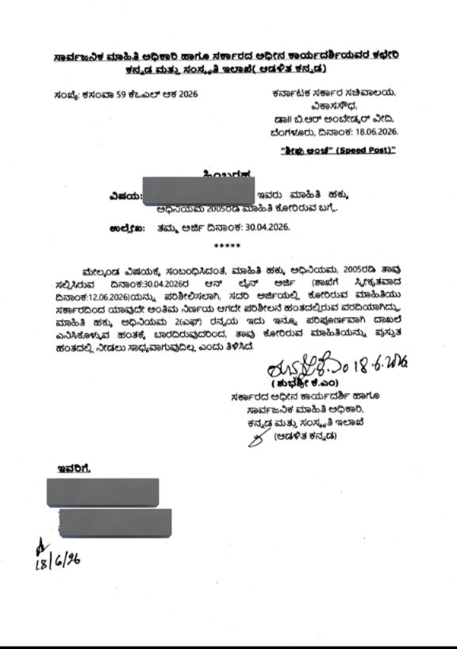

EXCLUSIVE: Gov’t Admits 'Gayatri Report' on Tulu Language Exists, But Uses RTI Loophole to Conceal It from Public
Documents obtained by The Tuluva Guardian reveal that the Department of Kannada and Culture has officially rejected an RTI query seeking tracking logs, staging a 100+ day delay on regional heritage transparency.